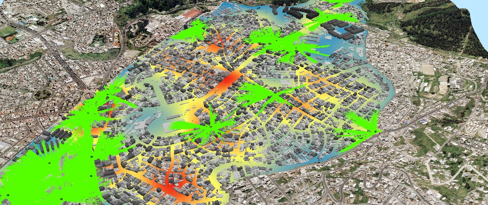
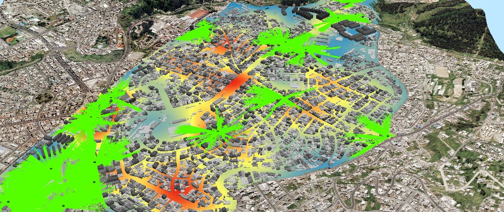

Geoservicios Disponibles
Se han implementado los geoservicios WMS y WFS
- WMS
- WFS
Es posible enlazar los geoservicios de todas las capas disponibles del geoportal a sistemas de información geográfica independientes como QGis, Kosmos, ArcGis, MapInfo, etc.
Ejemplo de conexión WMS desde QGIS
Para establecer una conexión WMS desde QGIS, se debe hacer click derecho sobre la opción WMS/WMTS y seleccionar "Conexión nueva...", se desplegará una ventana emergente en donde se deberá asignar un nombre a la nueva conexión, se procede a copiar el link del geoservicio WMS y pegarlo en el campo URL y seleccionar la opción "Aceptar". Finalmente para visualizar las capas disponibles, desplegar la pestaña WMS/WMTS y arrastrar las capas deseadas hacia el panel de capas de QGIS

Como se observa a continuación, una vez establecida la conexión con el servidor de mapas, las capas se pueden visualizar conservando su simbología de origen Ejemplo de visualización de capas mediante conexión WMS

Ejemplo de visualización de capas en ArcGIS ArcScence

Ejemplo de conexión WMS desde QGIS
Para establecer una conexión WMS desde QGIS, se debe hacer click derecho sobre la opción WMS/WMTS y seleccionar "Conexión nueva...", se desplegará una ventana emergente en donde se deberá asignar un nombre a la nueva conexión, se procede a copiar el link del geoservicio WMS y pegarlo en el campo URL y seleccionar la opción "Aceptar". Finalmente para visualizar las capas disponibles, desplegar la pestaña WMS/WMTS y arrastrar las capas deseadas hacia el panel de capas de QGIS
Como se observa a continuación, una vez establecida la conexión con el servidor de mapas, las capas se pueden visualizar conservando su simbología de origen Ejemplo de visualización de capas mediante conexión WMS
Ejemplo de visualización de capas en ArcGIS ArcScence
